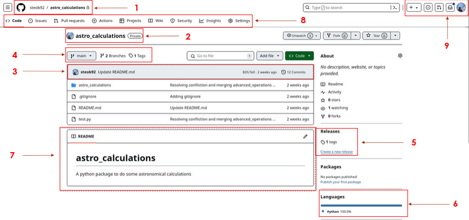
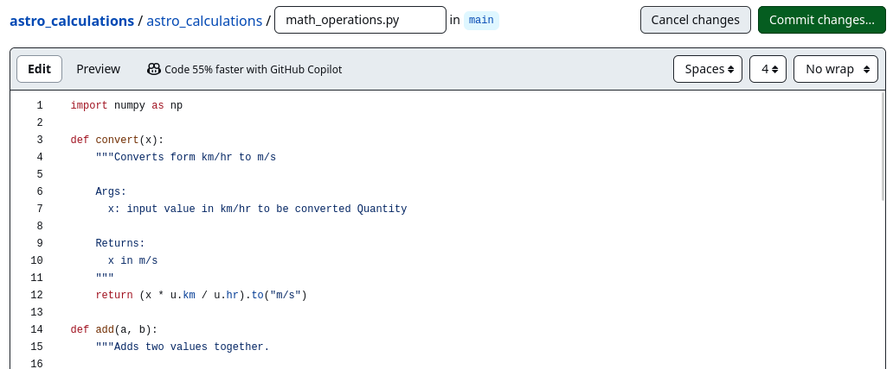
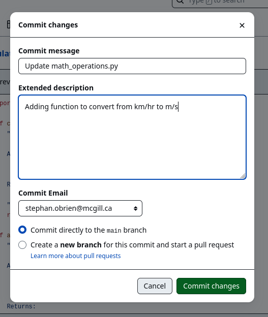
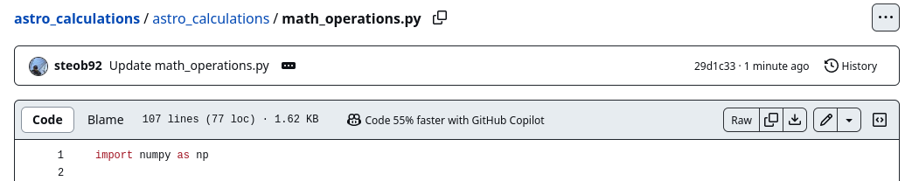
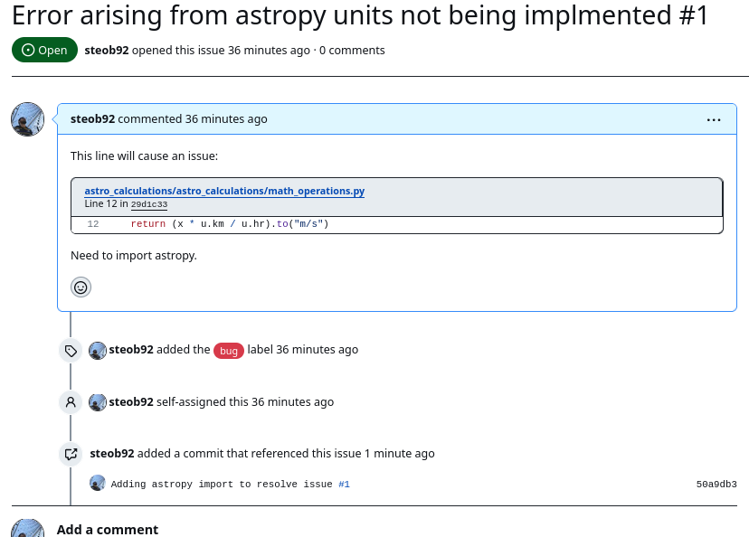
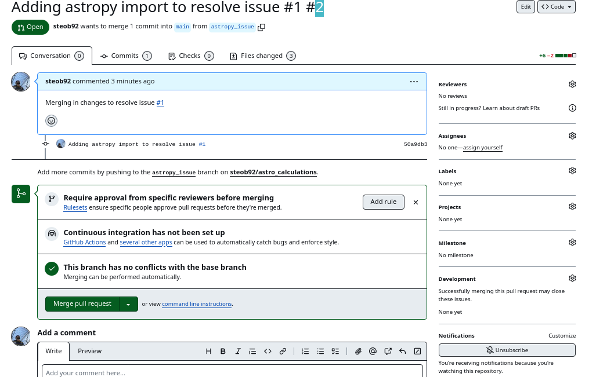
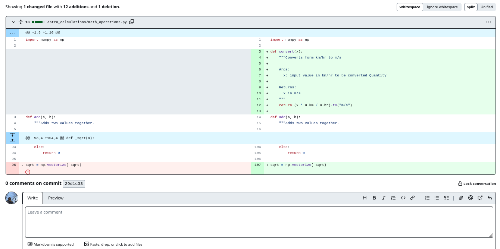
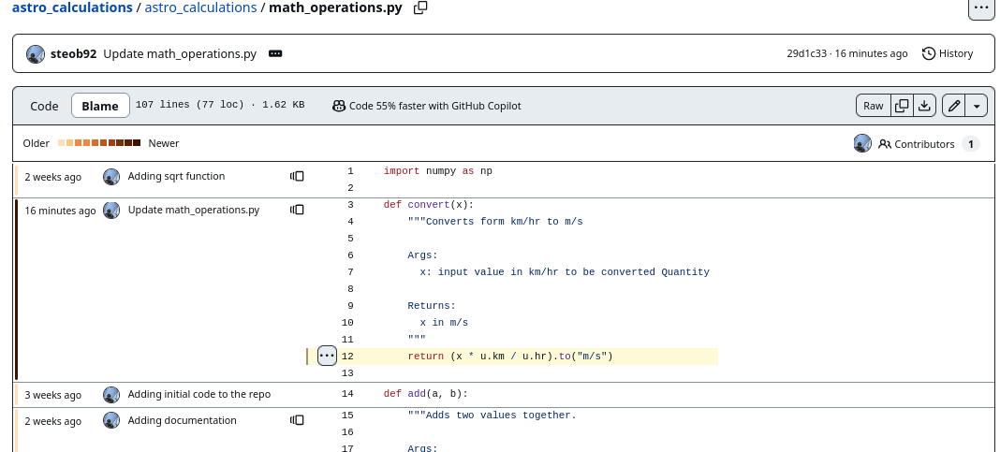
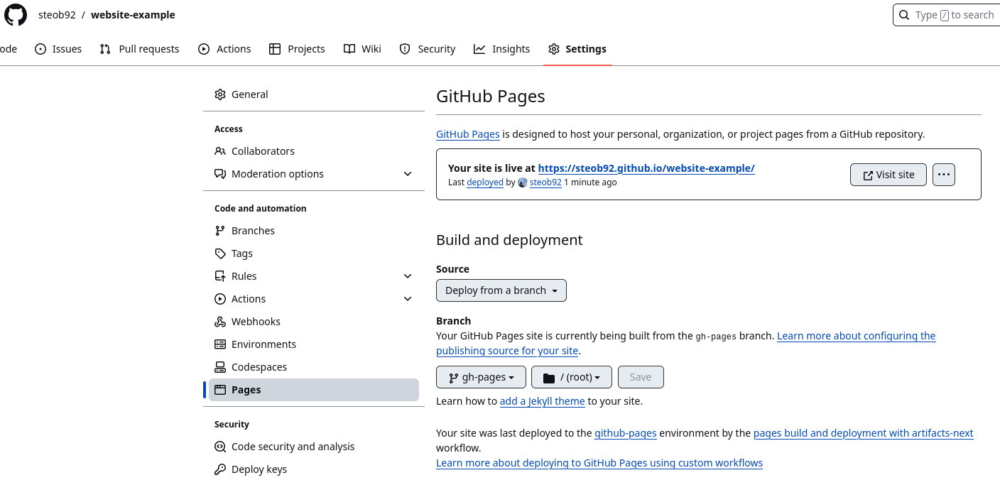

GitHub: Collaboration and Remote Repositories
Building on Git Basics, this tutorial covers using GitHub for hosting, collaboration, and project management.
Introduction to GitHub
GitHub is a web-based platform for hosting Git repositories. While alternatives exist (GitLab, Gitea, Forgea), GitHub is the most widely used in open science and academia.
Benefits of GitHub: - Free public repositories (unlimited) - Issue tracking and project management - Pull request workflow for code review - CI/CD integration (GitHub Actions) - Community and discoverability - Educational benefits (GitHub Student Pack)
Getting Started with GitHub
Create an Account
- Go to github.com
- Sign up with your email
- Recommended: Use your institutional email for student/educator benefits
- Students
- Educators
Authentication
You need to authenticate to push code to GitHub. Choose one:
Option 1: HTTPS with Personal Access Token (easier for beginners)
- Go to Settings → Developer settings → Personal access tokens
- Create a new token with
reposcope - When
git pushprompts for password, use your token
Option 2: SSH Keys (more secure long-term)
# Generate keys (if you don't have them)
ssh-keygen -t ed25519 -C "your.email@example.com"
# Add public key to GitHub
# Settings → SSH and GPG keys → New SSH key
cat ~/.ssh/id_ed25519.pub
Configure Git to use SSH:
git remote set-url origin git@github.com:username/repo.git
Creating Your First Repository
Create on GitHub
- Click + in top right → New repository
- Name it (lowercase, hyphens for spaces)
- Add description
- Choose public or private
- Initialize with README (optional)
- Click Create
Push Local Code to GitHub
# Navigate to your local repo
cd my_project
# Add GitHub as remote (if not already done)
git remote add origin https://github.com/your-username/my_project.git
# Rename branch to main (GitHub default)
git branch -M main
# Push code
git push -u origin main
Navigating Your Repository
Your repository page shows:
- Repository name and description: At the top
- Branch selector: See and switch branches
- Code tab: View files and folder structure
- File listing: The current directory contents
- README rendering: If
README.mdexists, it displays here - About section (right side): Links, topics, license
- Releases: Tagged versions of your code

Managing Your Repository
Edit Files on GitHub
You can edit files directly in the browser:
- Navigate to a file
- Click the pencil icon to edit
- Make changes
- Scroll to bottom and commit
- Write commit message
- Choose branch (create new for important changes)
- Click "Commit changes"


After committing, you'll see the latest commit information:

Best Practice: Use Branches
⚠️ Never commit directly to main. Instead:
- Create a branch for your work:
git checkout -b fix/typo - Make commits
- Push to GitHub:
git push -u origin fix/typo - Open a Pull Request (see below)
- Merge after review
Issues and Project Management
Creating Issues
Use Issues to track: - Bugs - Feature requests - Documentation needs - Questions
To create an issue:
- Go to repository → Issues tab
- Click "New issue"
- Add title and detailed description
- Assign to yourself or others
- Add labels (bug, enhancement, documentation, etc.)
- Add to Projects (optional)
Linking Issues to Code
In commits or PRs, reference issues:
Fix #42 # Closes issue 42 when merged
Fixes #42, #43 # Closes multiple issues
Close #42 # Also closes (same as Fix)
See #42 # Just references, doesn't close
Resolves #42 # Another way to close
This automatically links code changes to the issues they address, and can auto-close issues when the PR is merged.

Pull Requests: The Collaboration Workflow
A Pull Request (PR) is a request to merge changes from one branch into another, with code review.

Creating a Pull Request
- Push your branch to GitHub
- Go to repository → Pull requests
- Click "New pull request"
- Select:
- base: branch you want to merge into (usually
main) - compare: your feature branch
- Add title and description
- Reference issues: "Fixes #42"
- Click "Create pull request"
Pull Request Description Template
## Description
Briefly describe the changes.
## Type of Change
- [ ] Bug fix
- [ ] New feature
- [ ] Breaking change
- [ ] Documentation
## Testing
How to test these changes:
1. Step 1
2. Step 2
## Checklist
- [ ] Code follows style guidelines
- [ ] Added tests
- [ ] Updated documentation
- [ ] No new warnings generated
Closes #42
Viewing Diffs (What Changed)
When reviewing code, understanding diffs is crucial:
+ Added lines (green)
- Removed lines (red)
Context lines (unchanged)
Click on files in "Files changed" tab to see side-by-side diffs:

Code Review
As a code reviewer:
- Read the PR description
- Click "Files changed"
- Review the diff (green = additions, red = deletions)
- Click + to comment on specific lines
- Request changes or approve
Advanced review features:
# Viewing the diff locally before reviewing
git fetch origin pull/PR_NUMBER/head:local-branch-name
git checkout local-branch-name
# Now you can test the code locally!
As a PR author:
- Read review comments
- Make requested changes
- Push new commits (they auto-add to PR)
- Reply to comments explaining your choices
- Request re-review when ready
Merging a Pull Request
Once approved:
- Click "Merge pull request"
- Choose merge strategy:
- Create a merge commit: Keeps full history (safest for main)
- Squash and merge: Combines commits (cleaner history, good for feature branches)
- Rebase and merge: Replays commits (linear history, use with caution on shared branches)
- Optionally delete the branch
- PR is closed and merged
Best practice: Use "Squash and merge" for most feature branches to keep main history clean.
Collaboration Workflows
Forking and Contributing
To contribute to someone else's repository:
- Click Fork at top right (creates your copy)
- Clone your fork:
git clone https://github.com/your-username/repo.git cd repo - Add upstream remote:
git remote add upstream https://github.com/original-author/repo.git - Create a feature branch:
git checkout -b fix/issue-description - Make changes and commit
- Push to your fork:
git push origin fix/issue-description - On GitHub, click "Create pull request"
- Target the original repository
Keeping Your Fork Updated
# Fetch latest from original repo
git fetch upstream
# Merge into your main branch
git checkout main
git merge upstream/main
# Push to your fork
git push origin main
Repository Settings
Important settings (Settings tab):
- Branch protection: Require reviews before merging to
main - Require status checks (CI/CD) to pass
- Require reviews before merging
- Dismiss stale PR approvals when new commits are pushed
-
Require code owners review
-
Code owners: Specify who reviews changes to specific files (CODEOWNERS file)
- Secrets: Store API keys, tokens (for Actions)
- Pages: Enable GitHub Pages for documentation
- Actions: Configure CI/CD workflows
Branch Protection Best Practices
# .github/CODEOWNERS
# Automatically request reviews from these people
# Everyone
* @username
# Python files
*.py @python-maintainer
# Documentation
docs/ @docs-maintainer
# Tests
tests/ @qa-team
Advanced GitHub Features
GitHub Issues (Beyond Basics)
Labels for organization:
- bug: Something is broken
- enhancement: New feature request
- good first issue: Good for new contributors
- help wanted: Need external help
- documentation: Doc improvements
- wontfix: Deliberately not fixing
- duplicate: Same as another issue
# Filter issues locally
# View only bugs assigned to you:
# github.com/owner/repo/issues?assignee=me&labels=bug
# Create issue templates (auto-populate issue forms)
# Add to .github/ISSUE_TEMPLATE/bug_report.md
Watching and Notifications
Watch button options:
- Not watching: Only notified if mentioned
- Watching: All activity on this repo
- Ignoring: Never notified
- Custom: Choose specific events
Gists and Snippets
Share code quickly without creating a full repo:
# Create a gist from command line
echo 'print("hello")' | gh gist create -
# View: https://gist.github.com/your-username/gist-id
GitHub Discussions
For Q&A and announcements (alternative to Issues): - Announcements: Share news - Ideas: Brainstorm features - Polls: Get community input - Q&A: Answer questions
Using git blame and git log on GitHub
View file history and who made changes:
# On GitHub: Click any file, then top-right menu → "Blame" or "History"
# See commit details and author info

Security Features (Advanced)
Dependabot (automatic): - Detects vulnerable dependencies - Creates PRs with security updates
Code scanning: - Integrated with SAST tools - Warns about security issues
Secret scanning: - Detects exposed API keys, tokens - Prevents credential leaks
GitHub Pages
Host Static Sites from Your Repo
- Push content to
mainbranch (orgh-pages) - Settings → Pages
- Choose source branch
- Your site is live at
https://username.github.io/repo-name
For documentation: - Use Markdown files - Build with MkDocs, Sphinx, Jekyll - Automatically deploy on push

Best Practices for GitHub
- Always use descriptive branch names:
- Good:
feat/user-authentication,fix/memory-leak -
Bad:
feature,bugfix,test-123 -
Write clear commit messages: See Conventional Commits
-
Keep
maindeployable: Use branches for all development -
Code review everything: No direct commits to
main -
Use issues for discussions: Don't discuss bugs in PRs
-
Automate with CI/CD: See CI/CD tutorial
-
Document everything:
- README with setup instructions
- Contributing guidelines
-
Code of Conduct
-
Communicate with collaborators: Use clear PR descriptions and review comments
Next Steps
Now that you can collaborate on GitHub, learn how to structure Python packages and publish them: